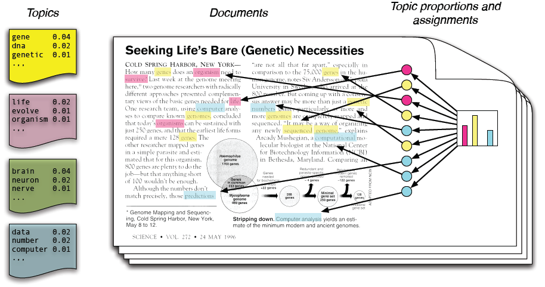

Bayesian Optimisation Overview
Jevgenij Gamper
TIA Lab Meeting 05/10/2017
Slides available at jgamper.github.io/GettingFeetWetInBayesianOptimisation
for all the links and useful resources click below
"Civilisation advances by the number of important operations which we can perform without thinking of them" (Alfred North Whitehead)
We are interested in smarter automation!
- Automatic model configuration
- Automate the design of physical experiment
Motivating examples
| Baltz et al., “Achievement of Sustained Net Plasma Heating in a Fusion Experiment with the Optometrist Algorithm.” |
Motivating examples
|  |
| Snoek, Larochelle, and Adams, “Practical Bayesian Optimization of Machine Learning Algorithms.” |
$$ x^{*} = \underset{x}{\arg\max} \ \mathcal{f}(x)$$
- $\mathcal{f}$ is a black box function (no closed form, no gradients)
- $\mathcal{f}$ is expensive to evaluate
- $\mathcal{f}$ most likely we only have access to noisy observations
$$ y = \mathcal{f}(x) + \epsilon$$
How do people usually optimise?
- Grid search
- Random Search
- Grad student descent
- Other black magic, and heuristics
What do we do when we have no access to the underlying function?
We try to fit a model to it! Regression!
Okay, so what?
Gaussian Process (or other regressor) as surrogate model to $\mathcal{f}$
$p(\begin{bmatrix} \mathbf{y} \\ \mathbf{f}^{*} \end{bmatrix} | \sigma^{2}) = \mathcal{N}(0, \begin{bmatrix} \mathbf{C} + \sigma^{2}\mathbf{I} & \mathbf{R}\\\mathbf{R}^{T} & \mathbf{C}^{*}\end{bmatrix}),$
$p(\mathbf{f}^{*} | \mathbf{y}, \sigma^{2}) = \mathcal{N}(\mathbf{\mu}^{*}, \mathbf{\Sigma}^{*}),$
$\mathbf{\mu}^{*} = \mathbf{R}^{T} (\mathbf{C} + \sigma^{2}\mathbf{I})^{-1} \mathbf{y}$
$\mathbf{\Sigma}^{*} = \mathbf{C}^{*} -\mathbf{R}^{T} (\mathbf{C} + \sigma^{2}\mathbf{I})^{-1} \mathbf{R}$
Acquisition function $u(x)$ guides the optimisation by determining which $x_{t+1}$ to observe next
- Exploration: prefer high variance regions
- Exploitation: prefer high mean regions
Is there a free lunch though?
Choice of $u(x)$ heavily affects optimisation results
Scalability in number of parameters
Up to 10 is okay..
But there are solutions!
- Use ensemble of acquisition functions (see resources)
- Use random forest regressor (Fusion example)
Swersky, Snoek, and Adams, “Freeze-Thaw Bayesian Optimization.”
$\mathcal{N}(\mathbf{\mu}, \mathbf{\Sigma}),$
Snoek, Larochelle, and Adams, “Practical Bayesian Optimization of Machine Learning Algorithms.”
- Multi-task learning
- Expected Improvement per second